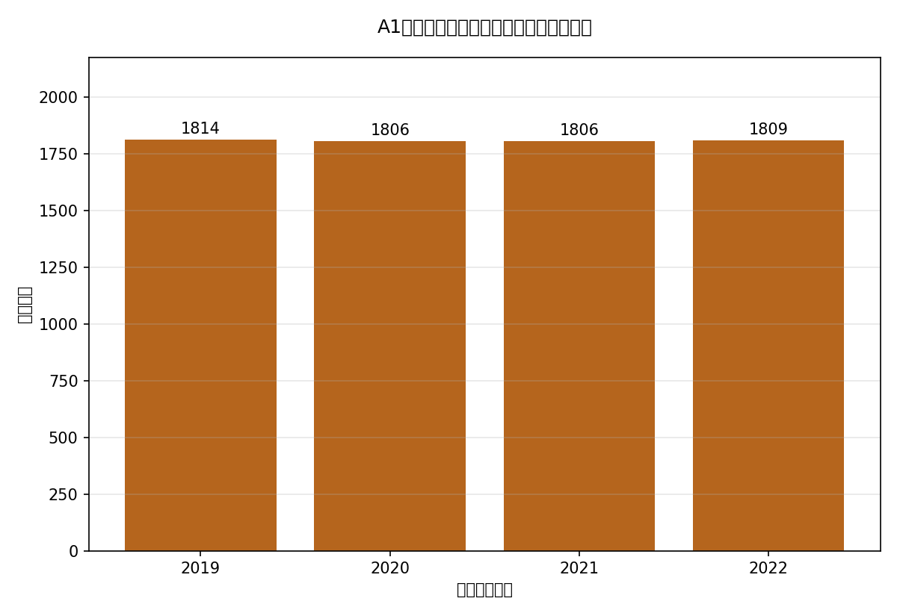
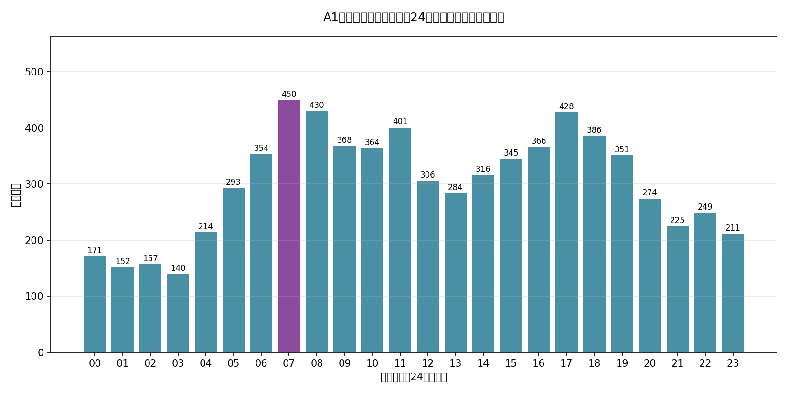
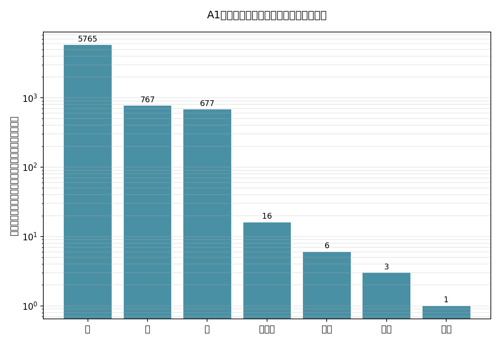
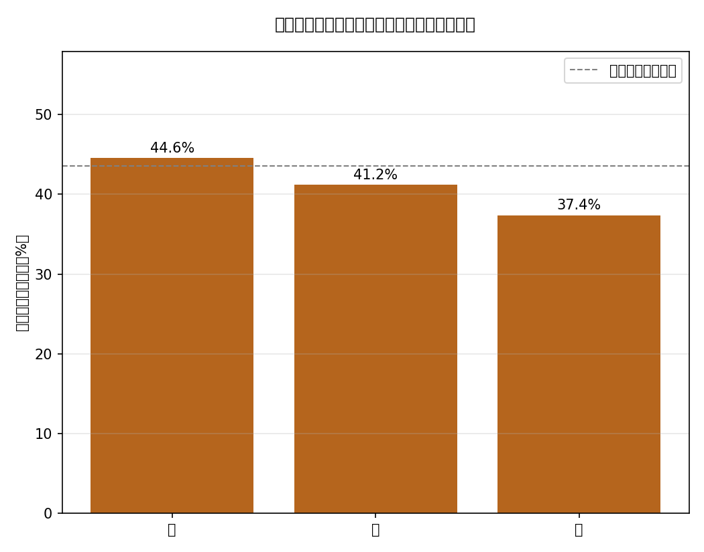
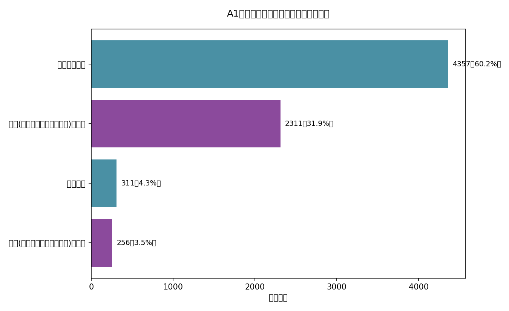
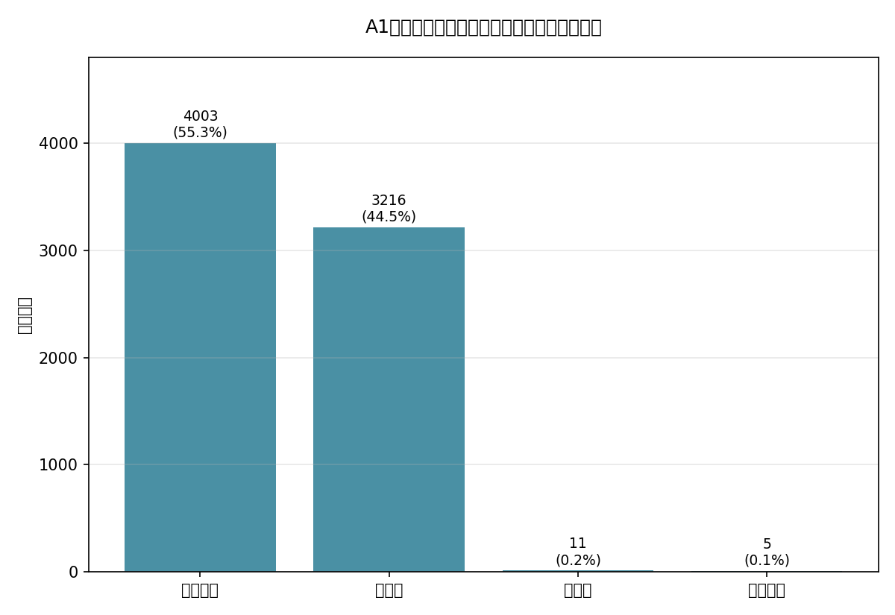
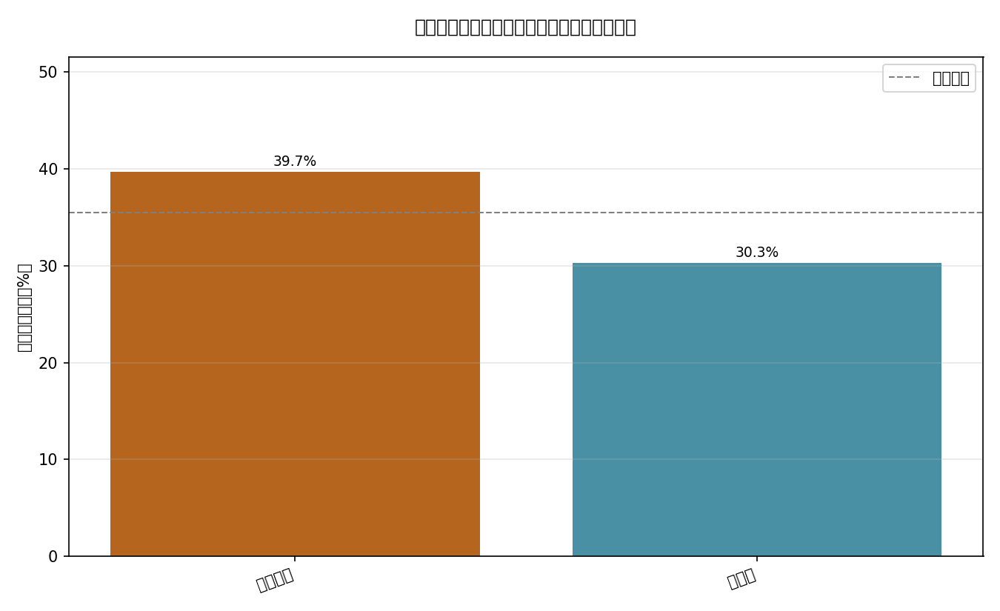
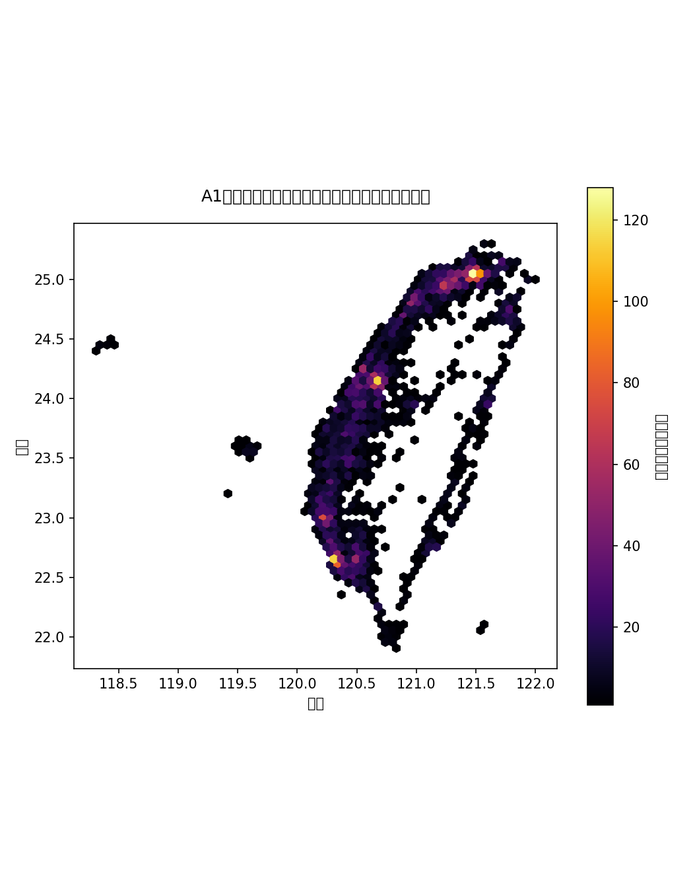
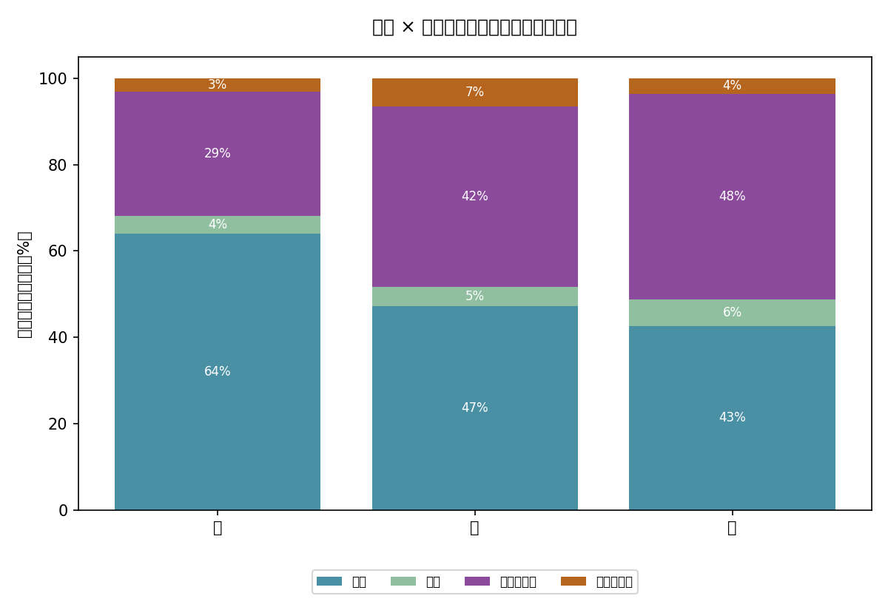

7,235
去重複後事故件數（2019–2022）
延續雨量儀表板已使用過的交通事故資料維度，改以警政署A1類（死亡）事故資料為對象，涵蓋2019～2022年共7,235件事故，進行時段／天候／道路型態的長期趨勢與多因子交叉分析，並加入地圖視覺化。
「臺灣雨量核心儀表板」中已將交通事故列為疊加維度之一，本專案延續同一份資料脈絡，改以警政署公開於data.gov.tw的「A1類（造成人員當場或24小時內死亡）道路交通事故資料」為對象，按年度分別下載2019～2022年（民國108～111年）共4個年度，做更深入的時段、天候、道路型態長期趨勢與多因子交叉分析。








